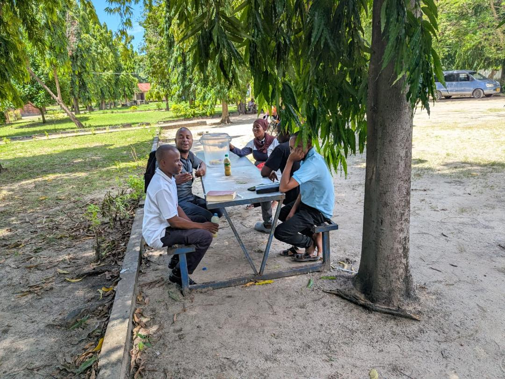
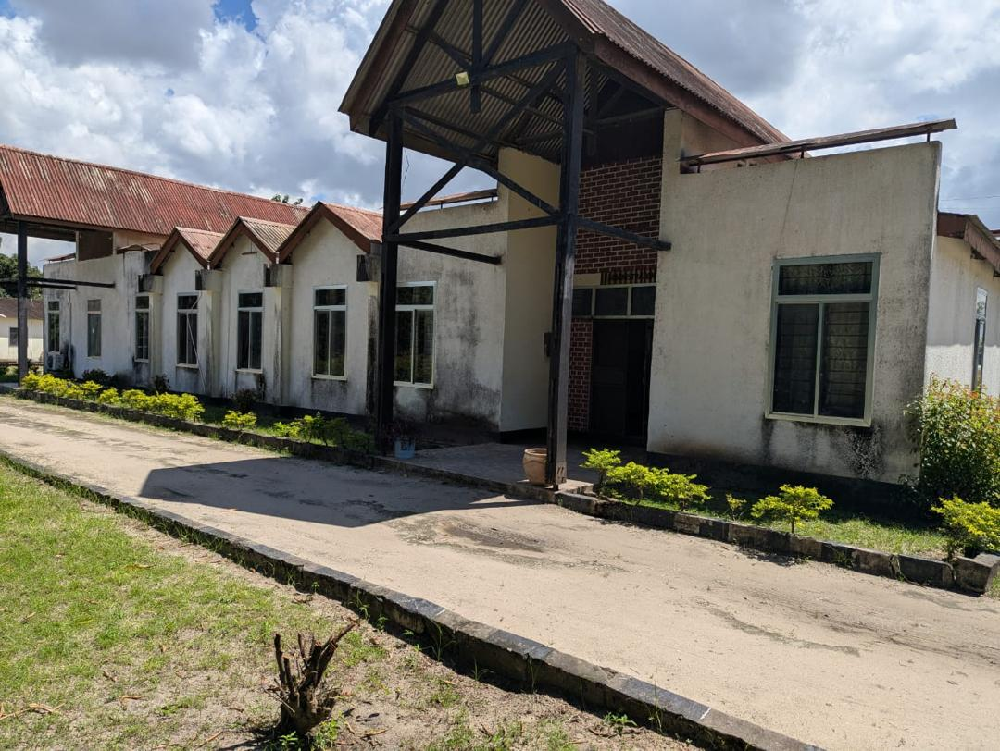

THE ANGLICAN CHURCH OF TANZANIA
St. Marks Theological College
Student Campus Life

Students engaging in learning activities

Collage library

Group discussions and teamwork

Collage hostel

Collage Venues

Collage Hall
News and updates
Campus Life Experience
Spiritual Growth
At St. Marks Theological College, students grow spiritually through daily prayers, chapel services, and mentorship programs guided by experienced clergy.
Academic Excellence
The college provides a strong theological foundation with qualified lecturers, modern learning resources, and interactive teaching methods.
Community Life
Students live in a supportive Christian community that encourages unity, teamwork, and shared responsibilities in daily activities.
Leadership Development
Through seminars, workshops, and ministry practice, students are equipped with leadership skills for service in churches and society.
Recreation & Wellbeing
The campus supports student wellbeing through sports, social activities, and a peaceful environment for relaxation and reflection.
Outreach Programs
Students participate in community outreach, evangelism, and service projects, applying their knowledge in real-life ministry.